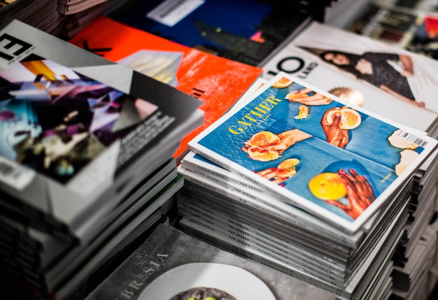

Връзка с производители
Връзка със студенти

Връзка с доброволци

Логистика
За нас
Чрез Социален хъб физически лица, организации и независими местни занаятчии ще могат лесно и бързо да продават продуктите си в региона и извън него. Ако производителите имат собствен он-лайн магазин или фейсбук страница, чрез платформата на Социален хъб ще имат възможност да достигнат до много повече потенциални клиенти. Ако нямате онлайн присъствие, ние ще Ви помогнем - група от студенти и ученици с високотехнологични умения ще изградят вашия уебсайт, магазин или страница в социалните мрежи. Генерираната от нас печалба ще се използва за финансиране на социална кухня за подпомагане на възрастни хора в неравностойно положение, за разнос на храна по домовете и други социални услуги.